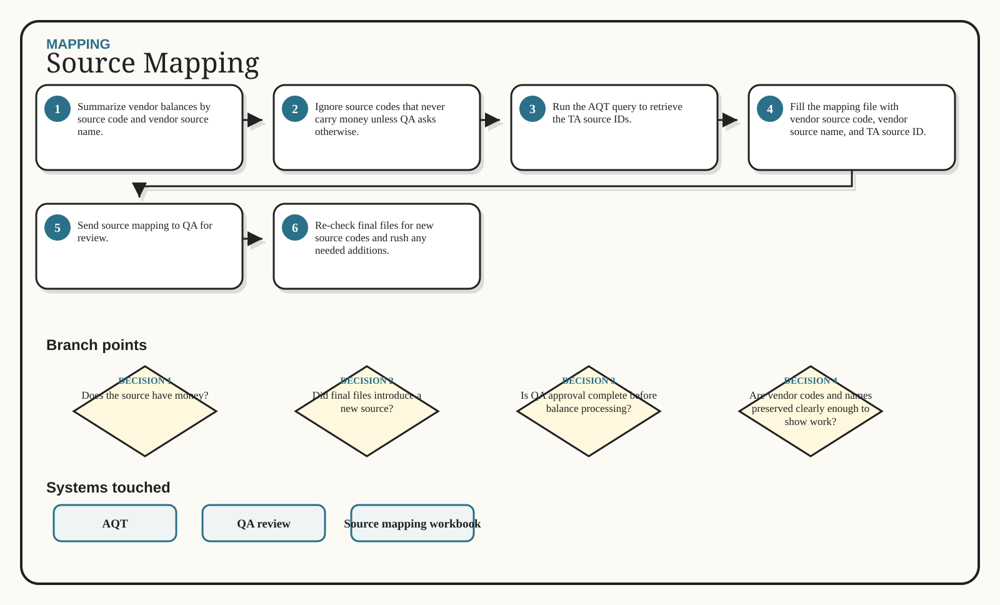

Mapping / Excalidraw flow
Source Mapping
Map vendor source codes to TA source IDs.
1Summarize vendor balances by source code and vendor source name.
2Ignore source codes that never carry money unless QA asks otherwise.
3Run the AQT query to retrieve the TA source IDs.
4Fill the mapping file with vendor source code, vendor source name, and TA source ID.
5Send source mapping to QA for review.
6Re-check final files for new source codes and rush any needed additions.
Generated whiteboard
Multi-branch visual route

Branch map
Decisions that change the route
1
Does the source have money?
2
Did final files introduce a new source?
3
Is QA approval complete before balance processing?
4
Are vendor codes and names preserved clearly enough to show work?
Swimlane
Inputs -> action -> output
Input
Action
Output
Test files
Final files
Vendor source code summaries
TA source ID query results
Summarize vendor balances by source code and vendor source name.
Ignore source codes that never carry money unless QA asks otherwise.
Run the AQT query to retrieve the TA source IDs.
Fill the mapping file with vendor source code, vendor source name, and TA source ID.
Approved source mapping file
Source IDs for balance workflows
Final-file source change list
System boxes
Where the work happens
AQT
QA review
Source mapping workbook
Sticky notes
Do not miss these
Done means done